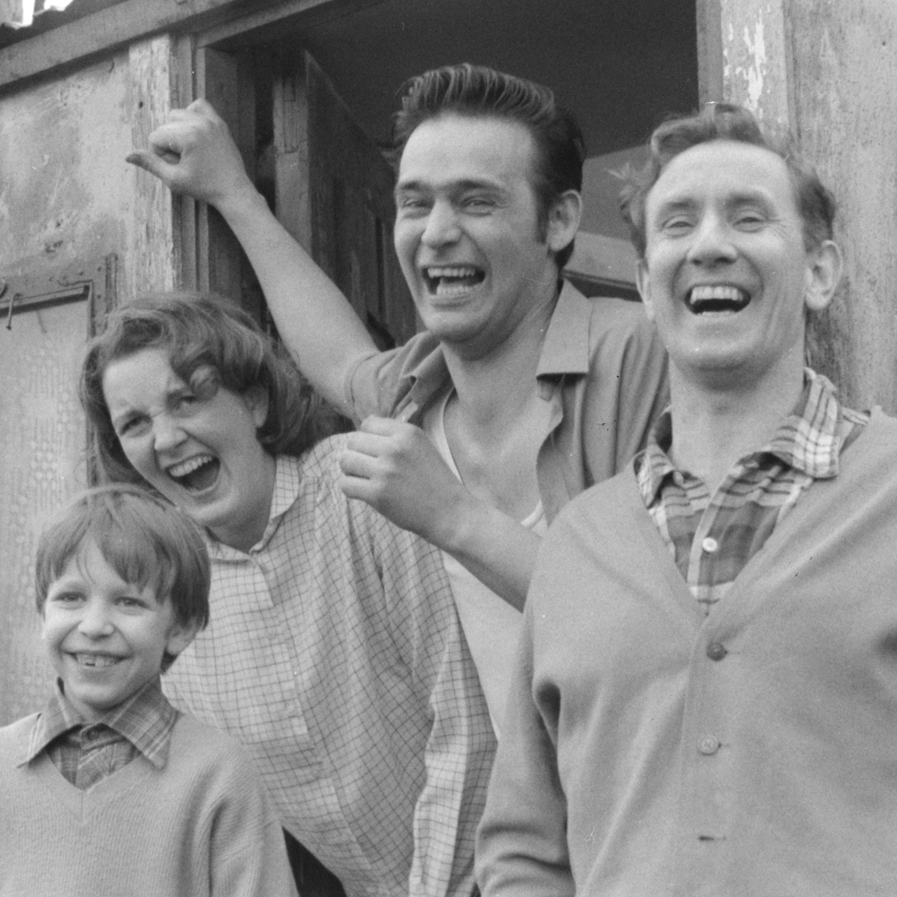
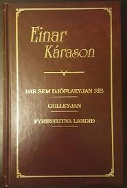

Bókin heitir "Þar sem djöflaeyan rís" eftir Einar Kárason en hann er þekktastur
fyrir einmitt þá bók. Einar hefur leikið stórt hlutverk í ritmenningu og pólitík
á Íslandi í gegnum lífstíð sína. “Einar átti sæti í stjórn Rithöfundasambands
Íslands á árunum 1984-1986, gegndi stöðu varaformanns 1986-1988 og stöðu formanns
á árunum 1988-1992.” (Reykjavík bókmenntaborg UNESCO, e.d.).
Sagan í bókinni gerist í braggahverfinu “Thulekampnum” sem var komið upp í Reykjavík
á stríðsárunum þegar að breski og bandaríski herinn höfðu aðsetur hér á landi.
þegar að herinn þurfti ekki lengur á bröggunum að halda notfærði fátækt og
heimilislaust fólk sér þessi skrýtnu tunnulaga hús og gerðu þau að heimilum sínum
(Þjóðskjalasafn Íslands, e.d.). Bókin fjallar um aðstæðurnar í braggahverfinu, fólkið
sem bjó þarna og ævintýrin/óhöppin sem það lenti í.
Þetta var samfélag af mjög illa stöddu fólki og í bókinni er sagt frá alls kyns
hrylling sem átti sér stað í hverfinu. Til dæmis ákvað tólf ára strákur að skera sig á
hálsi með rýtingi, bandóð kona brann inni í bragganum sínum og krakkarnir í hverfinu
tóku upp á því að brjótast inn í hús. Þetta fólk var mjög fordæmt af öðrum í
samfélaginu á Íslandi og mætti...
...andstyggð frá fólki sem bjó annars staðar. Fólkinu úr
hverfinu var oft mætt grjótkasti og hótunum ef sæjust þau í öðrum hverfum. Vegna
þessarar félagslegrar útskúfunar og vegna þess að allir voru í svipuðum sporum
fjárhagslega mynduðust sterk sambönd milli íbúanna. Fólk þekkti nánast allt hvert
annað og þetta hverfi líktist einni stórri fjölskyldu.

Það mætti því segja að Karólína spákona, persóna í bókinni, leiki hlutverk móðurinnar í
þessari fjölskyldu og þess vegna finnst mér hún vera mikilvægasta persóna sögunnar. Hún
er ráðagóð, reynslumikil kona og góð í því að leysa vandræði með orðum sínum. Hún er
einnig svolítið gamaldags og hjátrúuð enda vinnur hún sem spákona. Borgarbúar, jafnt í
braggahverfinu og annars staðar í borginni, virtust bera óttablandna virðingu fyrir
henni vegna þess hversu göldrótt hún þóttist vera. Eiginmaður hennar hann Tómas myndi
auðséð leika faðirinn í fjölskyldu braggahverfisins en hann er sá sem tekur ákvarðanirnar
í sögunni. Hann tók ákvörðunina um að reisa gamla húsið, stofna íþróttarfélagið Kára og
átti búð í braggahverfinu. Hann virðist vera venjulegastur í hópnum og mjög raunsær maður.
Það er erfitt að geta sér til um á hvaða árum þessi saga gerist nákvæmlega en hún
gerist einhvern tímann eftir seinni heimstyrjöldina þegar fólk bjó í bröggum og herinn
var enn hér á landi. Hins vegar er hægt að sjá innri tímann með því að fylgja aldri
persóna. Grjóni eða Sigurjón, persóna í bókinni, er 11 ára þegar að bókin byrjar en 18 ára
þegar hún endar.
Þannig að ég myndi giska á það að innri tími sögunnar væri 7 ár.
Frásagnaraðferðin sem notuð er í bókinni er frekar einkennileg. Sögumaðurinn er alvitur og
getur lýst inn í persónur eins og hann vill. Sjónarhornið er hins vegar breytilegt því
stundum tekur hann sér stöðu með aðeins einni persónu og segir frá einhverju atviki út frá
hennar sjónarhorni.
Bókin fékk góða dóma bæði innlendis sem erlendis og var þýdd á mörgum tungumálum. Hún varð
að metsölubók og miklu afreki af hálfu Einars. Bókin er hluti af þríleik sem kallaður var
Eyjabækurnar þar sem haldið var áfram með sögurnar úr braggahverfinu. Í tímariti
Þjóðviljans kemur einnig fram að danskur gagnrýnandi hafi líkt rithætti og tækni Einars í
bókinni við íslendingasögurnar (S.A., 1989).

Hér má finna viðtal við Jósefínu í Nauthól sem er sögð hafa verið innblásturinn
að Karólínu spákonu, persónu í bókinni.